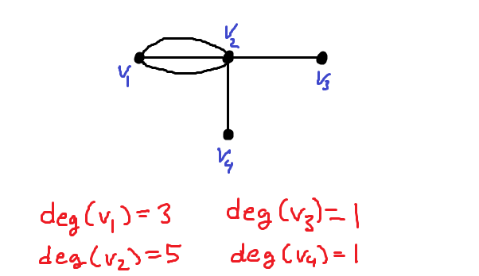
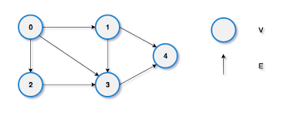
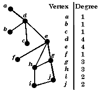

What is Vertex Degree?
The vertex degree in a graph refers to the number of edges connected to a particular vertex (node). In simple terms, it indicates how many connections a node has within the graph. The degree of a vertex is an important concept in graph theory, used to analyze the properties and structure of graphs. In undirected graphs, each edge adds to the degree of both connected vertices. In directed graphs, we distinguish between in-degree (edges coming into the vertex) and out-degree (edges going out of the vertex).
Why is Vertex Degree Important?
Calculating the degree of vertices in a graph has several practical applications, including:
- Network Analysis: Determining the most influential nodes in a network, such as identifying key influencers in social networks or critical nodes in computer networks.
- Graph Traversal: Optimizing search algorithms like Depth First Search (DFS) and Breadth First Search (BFS) by considering vertices with higher degrees first.
- Epidemiology: Analyzing how diseases spread by studying connections between individuals (nodes) and understanding which nodes have the most contacts.
- Web Page Ranking: In search engine algorithms, pages with higher degrees of connection might be considered more significant or popular.
- Power Grid Analysis: Assessing critical points in a power distribution network by calculating the degree of each station or node in the system.
Examples of Vertex Degree


